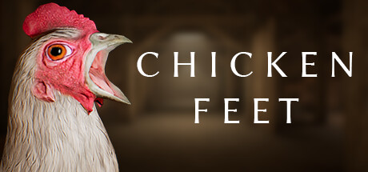

Chicken Feet
Release: 10/25/2022
Role: Lead Developer & Designer
Tools: UE5.0, Blender, C++, Blueprints
Description: A first person survival-stealth horror game about a giant, angry chicken. Built over the course of 5 months, I built this project from the ground up, handling programming, design, writing, art direction, while working with international contractors.